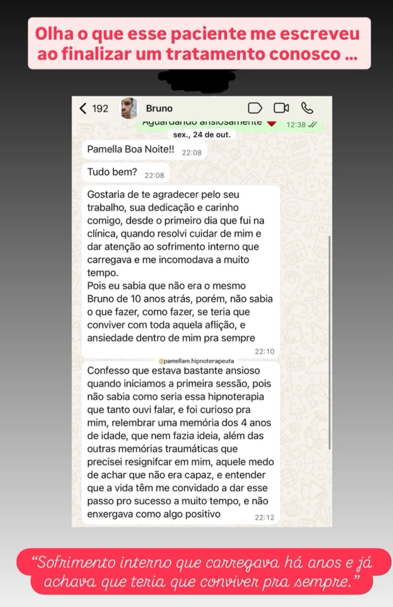
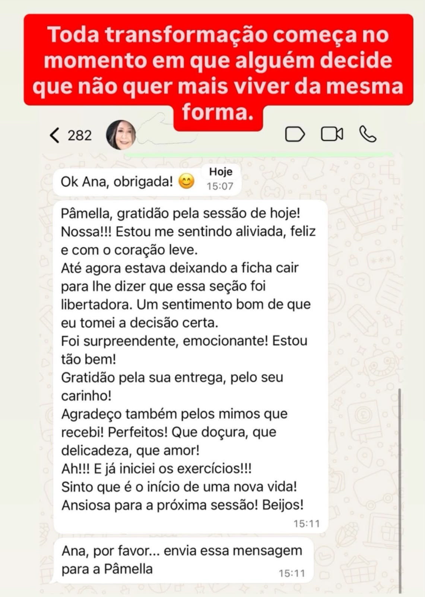

Uma leitura do que você sente, e do caminho para resolver de vez.
Olá! Que bom que você chegou até aqui. 💛
Se você respondeu à leitura emocional, é porque alguma coisa dentro de você pediu atenção. Eu li com carinho o que você compartilhou, e preparei essa leitura pra te mostrar, com honestidade, o que pode estar por trás do que você sente. E, principalmente, que existe caminho.
Quero começar por uma verdade que talvez ninguém tenha te dito: o que você vive não é falta de esforço, nem "frescura". Tem uma explicação, e tem solução.
Se você sente que vive no automático, dando conta de tudo por fora enquanto por dentro carrega um peso que não passa, saiba que esse padrão se repete em quase todas as pessoas que chegam até a gente.
A ansiedade que não desliga. A autossabotagem que se repete. Aquele vazio que aparece mesmo quando, no papel, está tudo "certo". Pode ter começado há meses ou há anos, e já vem custando caro: no sono, no humor, nas relações, na forma como você se cobra. E isso tem uma explicação.
Você provavelmente já tentou de tudo: terapia, talvez remédio, leitura, força de vontade. E, mesmo assim, o padrão voltou.
Faz sentido. A maioria das abordagens trabalha o que você sente hoje, o sintoma. O alívio vem, e por isso parece que resolveu. Mas a origem emocional, os gatilhos e as memórias guardados no inconsciente, continua intacta. Não é recaída sua; é a causa que ainda não foi acessada.
Se já fez sentido pra você, é só tocar aqui.
Hipnose Clínica, Leis Biológicas e Neurociência, num acompanhamento individual e estruturado, em quatro etapas:
É um processo com data pra começar e pra terminar. A maioria dos casos evolui em até 3 meses.
O caminho começa por uma Sessão de Avaliação: um mapeamento completo do seu histórico e dos seus padrões, com a definição de um plano individual. Você sai dela entendendo exatamente o que está acontecendo com você.
Aquilo que você deseja, uma vida mais leve e livre desse padrão, é totalmente possível. A gente faz isso todos os dias.
Atendimento presencial em Contagem/BH e online para todo o Brasil.
Pessoas reais que pararam de tratar o sintoma e foram na causa:


O que essas histórias têm em comum: a pessoa parou de tratar o sintoma e foi na causa.
Dar o primeiro passo é simples, e no seu tempo. Se essa leitura fez sentido pra você, é só tocar no botão que a gente já organiza sua Sessão de Avaliação.